Registros climáticos diarios de siete ciudades de Euskal Herria, obtenidos de Open-Meteo (ERA5). El análisis cubre 86 años e incluye temperatura, precipitación y viento.
| Ciudad | Latitud | Longitud | Dist. mar | Altitud |
|---|---|---|---|---|
| Bilbo | 43.26° N | 2.94° O | 8 km | 19 m |
| Donostia | 43.32° N | 1.98° O | 3 km | 5 m |
| Gasteiz | 42.85° N | 2.67° O | 57 km | 524 m |
| Iruña | 42.81° N | 1.65° O | 84 km | 449 m |
| Baiona | 43.49° N | 1.47° O | 8 km | 6 m |
| Arrasate | 43.08° N | 2.49° O | 31 km | 339 m |
| Maule | 43.22° N | 0.89° O | 89 km | 144 m |
Variables
- Temperatura media diaria (°C)
- Temperatura máxima diaria (°C)
- Temperatura mínima diaria (°C)
- Precipitación diaria (mm)
- Velocidad máxima del viento (km/h)
Técnicas estadísticas
- Regresión lineal OLS
- Test Mann-Kendall
- Percentiles P90 / P95
- Clustering jerárquico + PCA
- Correlación de Pearson
Tendencia de la temperatura media anual y su anomalía respecto al período de referencia 1961–1990 (estándar OMM).
Anomalía de temperatura media anual — todas las ciudades
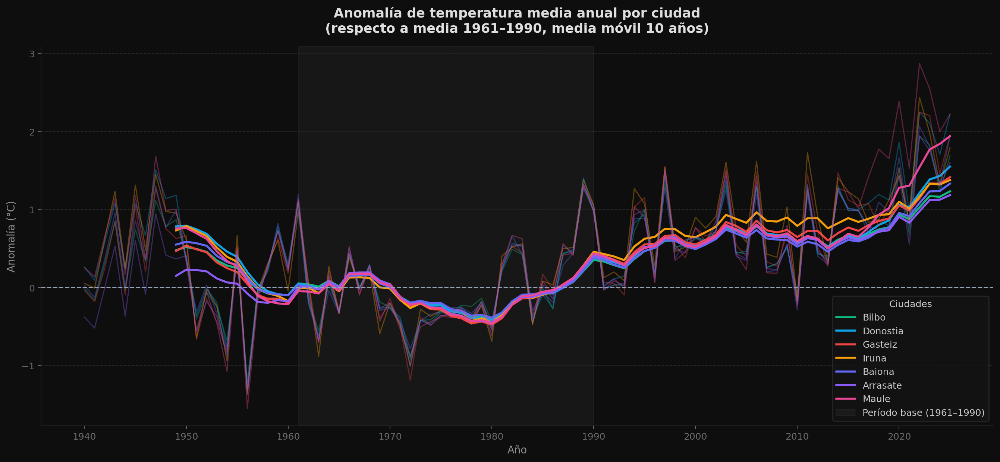
Temperatura media anual con tendencia OLS
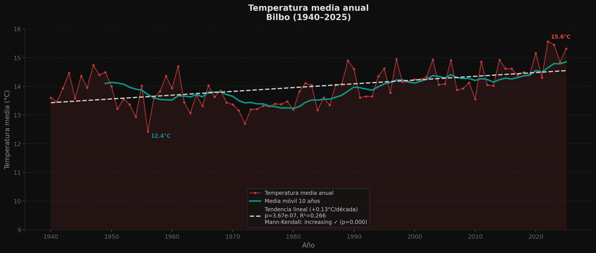
Anomalía respecto a la media 1961–1990
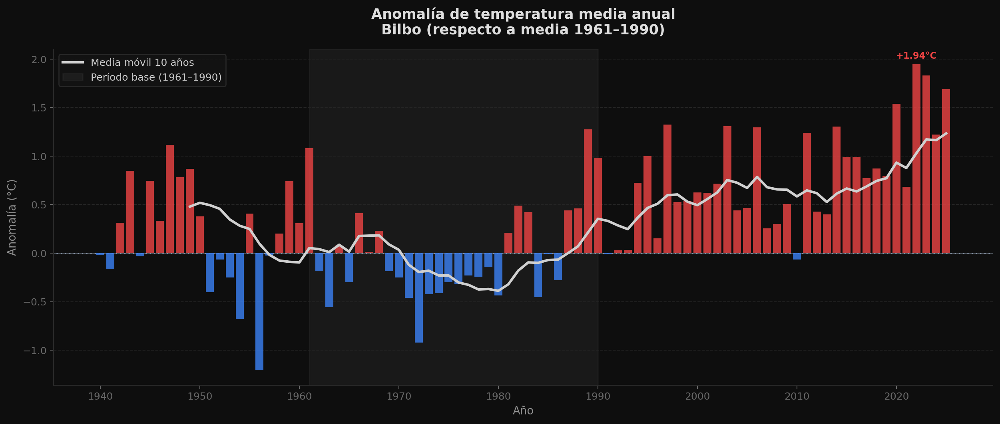
Tendencia positiva significativa en las 7 ciudades (Mann-Kendall p < 0.05).
Incremento de +0.2–0.3 °C por década, más pronunciado en ciudades de interior.
La anomalía positiva se acelera a partir de 1980 en todas las estaciones.
Los años más cálidos del registro se concentran en el período 2000–2025.
Evolución de la lluvia anual, las rachas secas y los episodios de precipitación intensa.
Rachas secas — comparativa entre ciudades
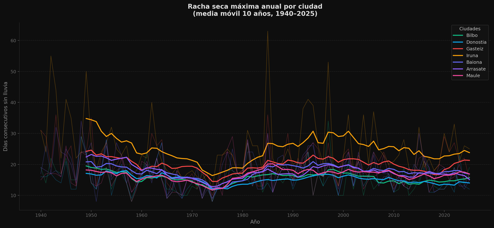
Precipitación total anual
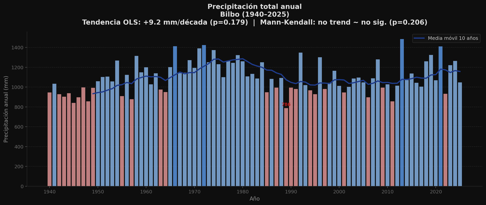
Heatmap precipitación mensual
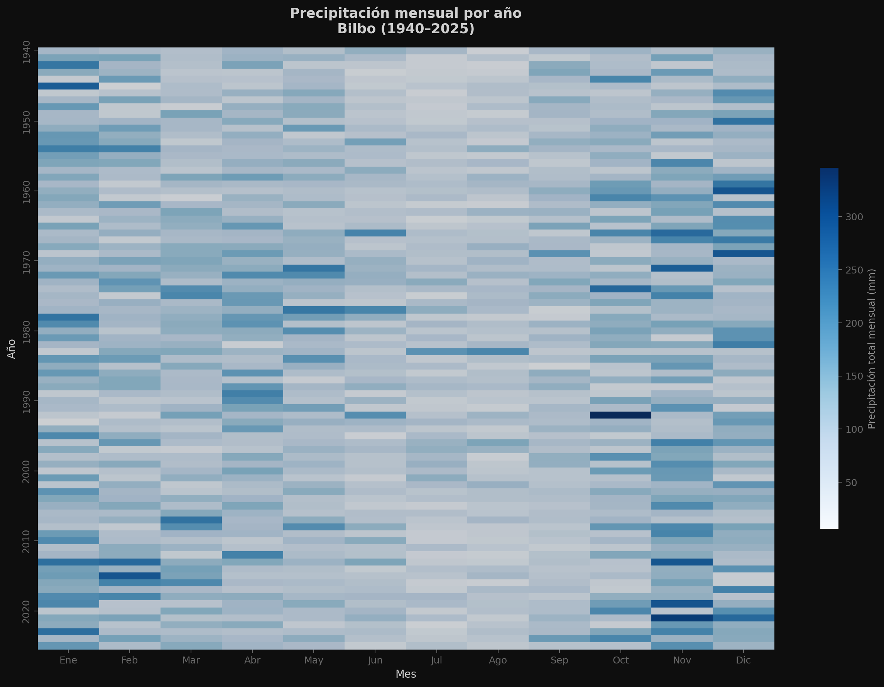
Días con precipitación intensa (> 30 mm)
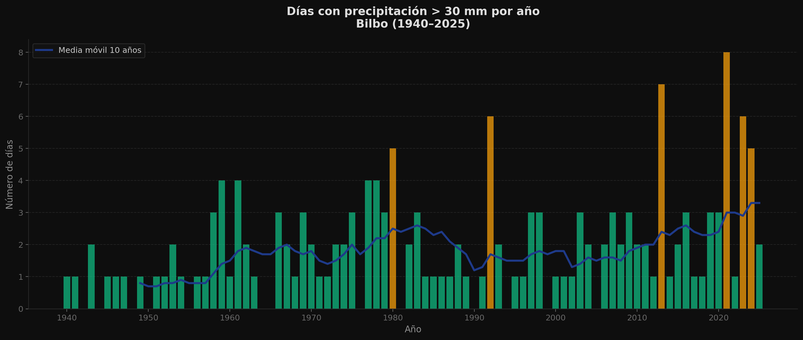
Tendencia negativa en la mayoría de ciudades, aunque estadísticamente débil.
Las rachas secas no muestran tendencia significativa en ninguna ciudad (Mann-Kendall p > 0.05). Las más largas se dan en el interior: Iruña y Gasteiz rondan los 20–25 días de racha máxima al año, frente a 14–17 en la costa.
Los episodios intensos (> 30 mm) no muestran reducción clara: podrían estar aumentando.
La alta variabilidad interanual dificulta aislar la señal climática a largo plazo.
Comparativa de temperatura y precipitación, y clustering jerárquico para agrupar las ciudades según su perfil climático.
Temperatura media anual
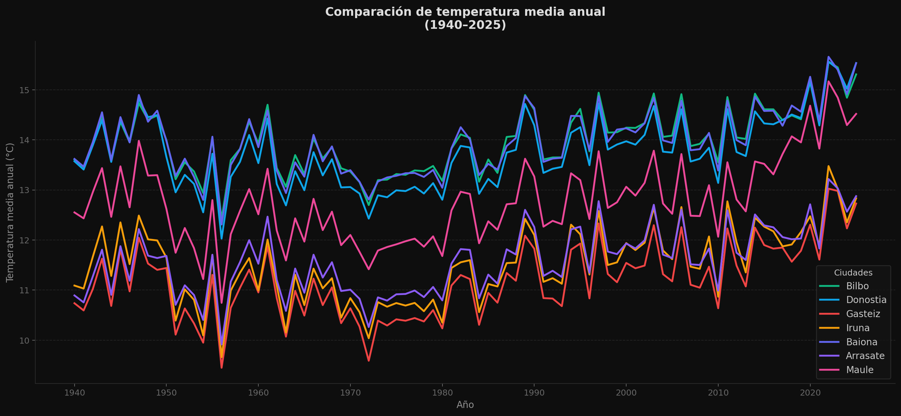
Precipitación anual
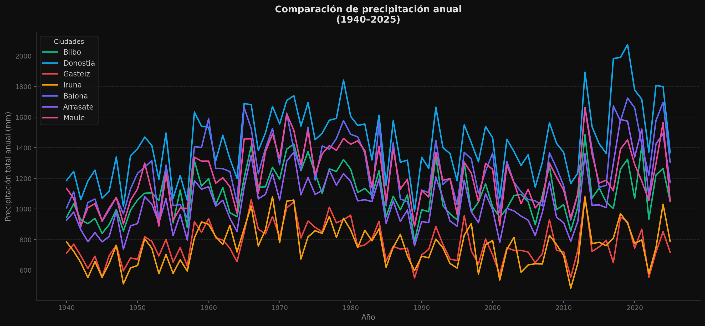
Dendrograma de similitud climática
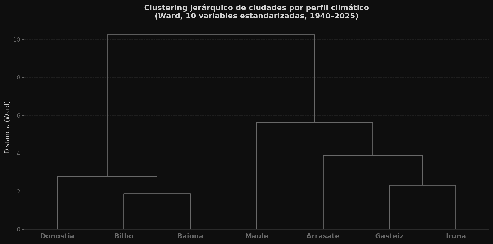
Heatmap del perfil climático
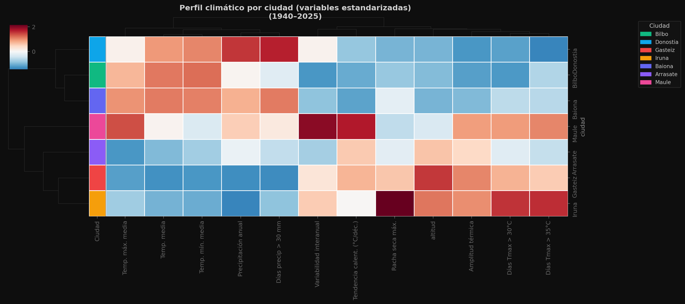
Dos grupos bien definidos: costa atlántica (Bilbo, Donostia, Baiona) e interior (Gasteiz, Iruña, Arrasate, Maule).
La distancia al mar y la altitud son los principales factores del gradiente climático.
El dendrograma separa costa e interior con claridad: la distancia entre ambos grupos (~10) casi duplica la mayor distancia dentro de un mismo grupo (~5.6).
Dentro del interior, Arrasate se agrupa con Gasteiz e Iruña, y Maule es la ciudad más singular: la mayor variabilidad interanual y la tendencia de calentamiento más alta.
Evolución de los días con Tmax > 35 °C, las olas de calor y las noches tropicales (Tmin ≥ 20 °C).
Olas de calor (Tmax > 35°C · ≥ 3 días)
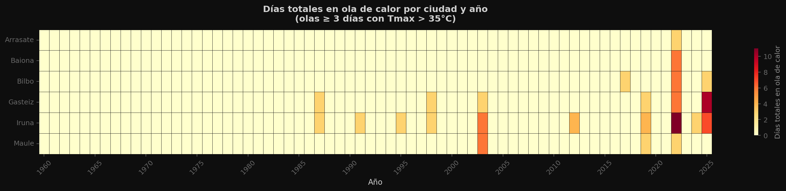
Episodios sobre el percentil 95
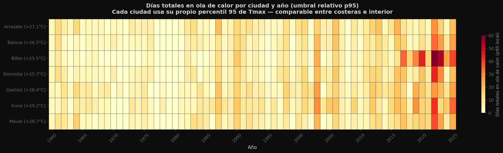
Noches tropicales (Tmin ≥ 20 °C)
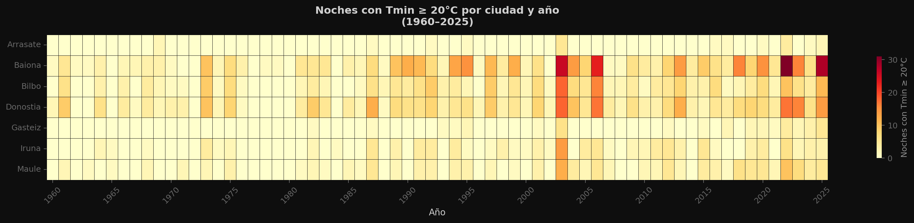
Comparativa de noches tropicales entre ciudades
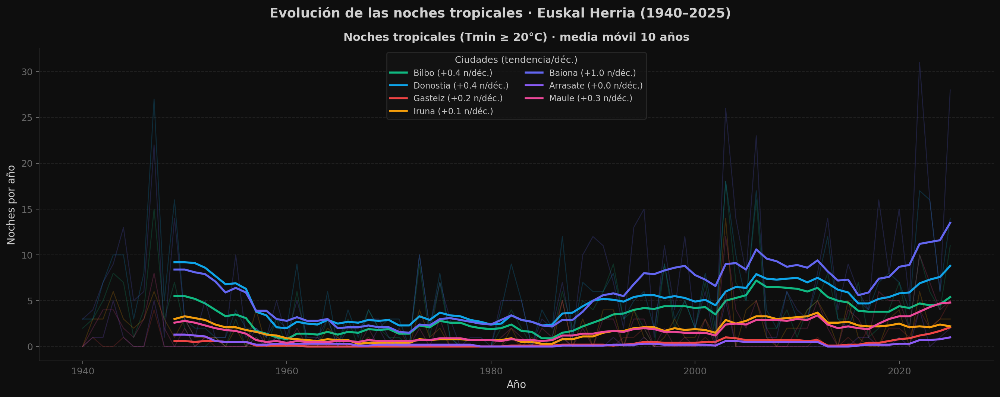
Días con Tmax > 35 °C por año
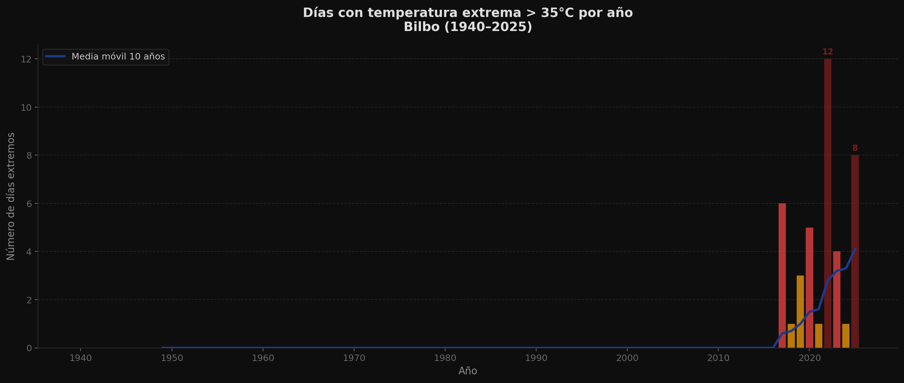
Noches tropicales (≥ 20 °C) y muy cálidas (≥ 25 °C)
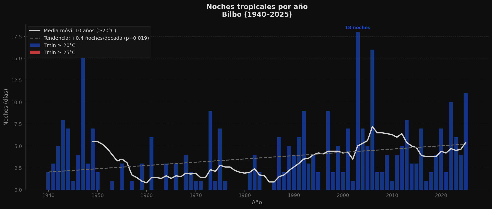
Los días con Tmax > 35 °C se han multiplicado desde 1980, con aceleración en la última década.
Las olas de calor son más frecuentes, más largas e intensas en el período 2000–2025.
Los años 2003, 2019 y 2022 destacan como picos históricos en toda la región.
Las ciudades costeras y de baja altitud registran menos extremos por su doble protección geográfica.
Las noches tropicales (Tmin ≥ 20 °C) aumentan sobre todo en la costa: en Baiona pasan de 2.5 al año (1950–1979) a 13.5 en 2016–2025. En el interior siguen siendo escasas, entre 1 y 5 al año.
Las noches muy cálidas (Tmin ≥ 25 °C) siguen siendo excepcionales: solo una en todo el registro (Donostia, 2022).
Evolución del ciclo estacional, la duración del verano meteorológico y la amplitud térmica anual.
Duración del verano meteorológico
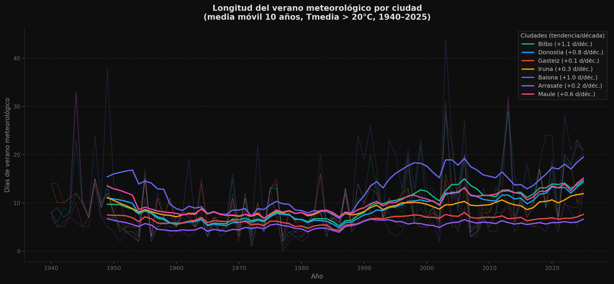
Inicio y fin del verano
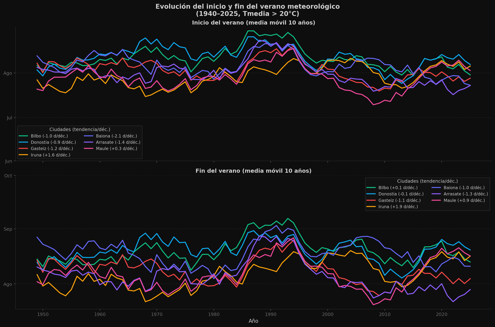
Amplitud térmica anual por ciudad
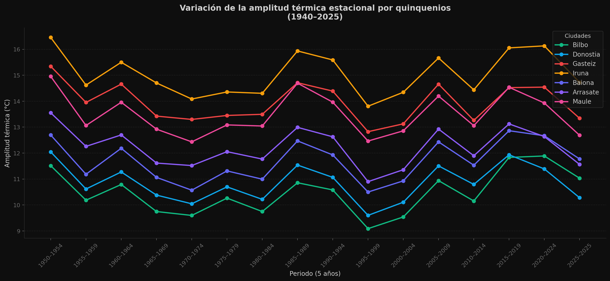
Duración del verano por décadas
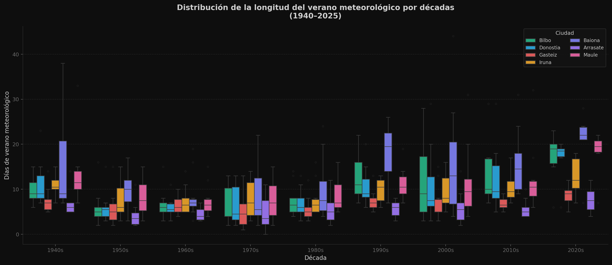
Ciclo estacional mensual
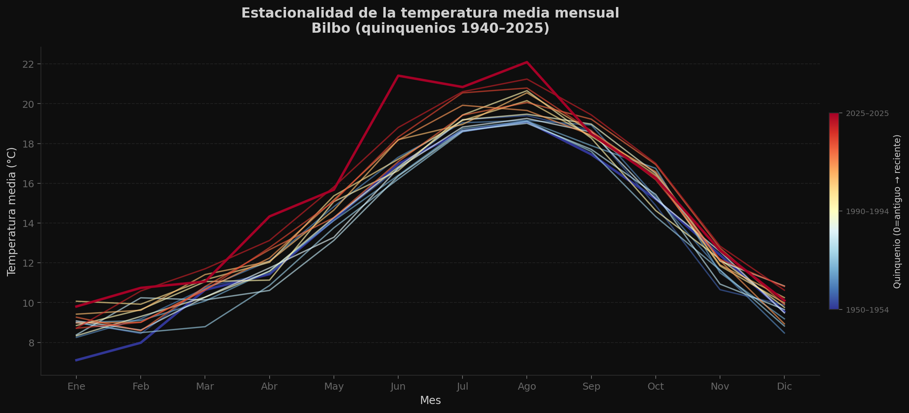
El verano se alarga, sobre todo en la costa: la racha anual más larga de días con Tmedia > 20 °C crece entre 7 y 9 días desde 1940 en Bilbo, Donostia y Baiona (p < 0.01).
La amplitud térmica aumenta en ciudades de interior y mayor altitud.
Las ciudades costeras y de baja altitud mantienen una estacionalidad más suave.
Las fechas de inicio y fin del verano no se desplazan de forma significativa en ninguna ciudad (p > 0.05): el cambio está en la duración, no en el calendario.
Evolución de la velocidad máxima diaria del viento (media anual), los días de viento fuerte y el ciclo estacional en costa e interior.
Ciclo estacional del viento — todas las ciudades
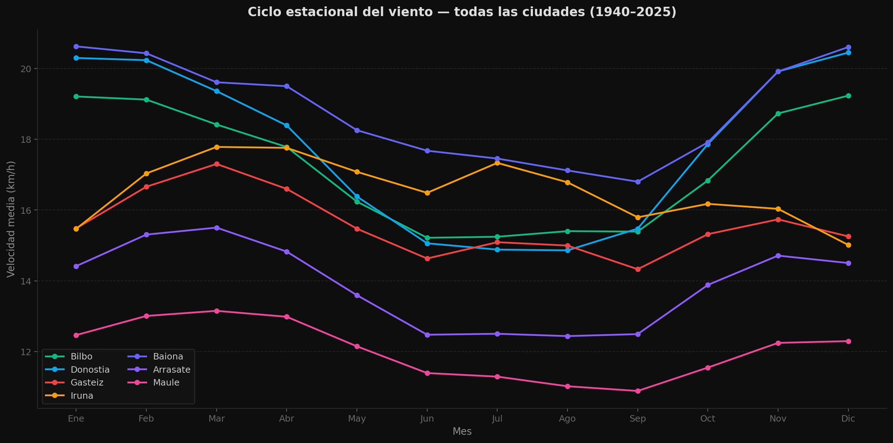
Perfil mensual por períodos históricos
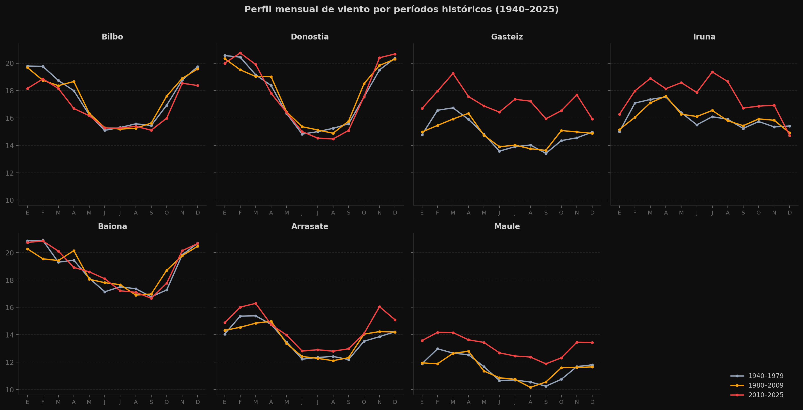
Velocidad máxima diaria (media anual) con tendencia OLS
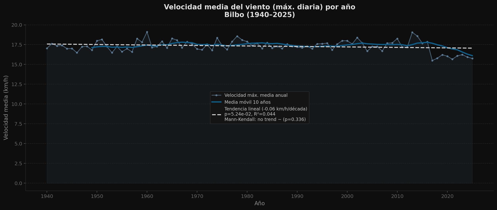
Días con viento fuerte (> 50 km/h) por año
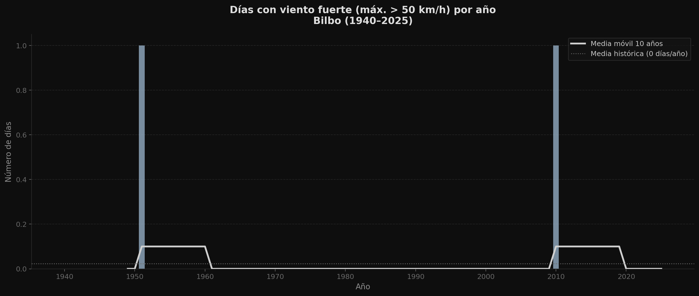
El viento aumenta en las 4 ciudades de interior (Gasteiz, Iruña, Arrasate y Maule; Mann-Kendall p < 0.01), entre +0.1 y +0.3 km/h por década.
Los días de viento fuerte (> 50 km/h) son raros y se concentran en Baiona (~1 al año); en el resto de ciudades apenas aparecen.
El ciclo estacional cambia entre costa e interior: en la costa el viento es máximo en invierno (diciembre-enero); en el interior el pico llega en marzo y el ciclo es más plano.
En la costa no hay tendencia significativa. Al tratarse de datos de reanálisis (ERA5), la subida del interior convendría contrastarla con estaciones de medida.
La distancia al mar y la altitud son los dos ejes que explican la mayor parte de la variabilidad climática entre ciudades.
Correlación distancia al mar · Pearson + IC 95%
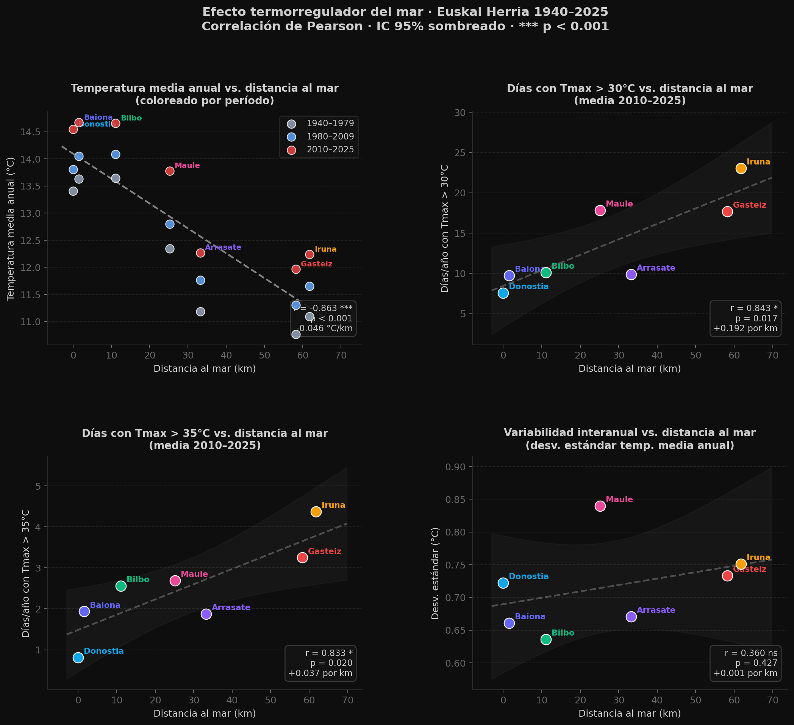
Correlación altitud · Pearson + IC 95%
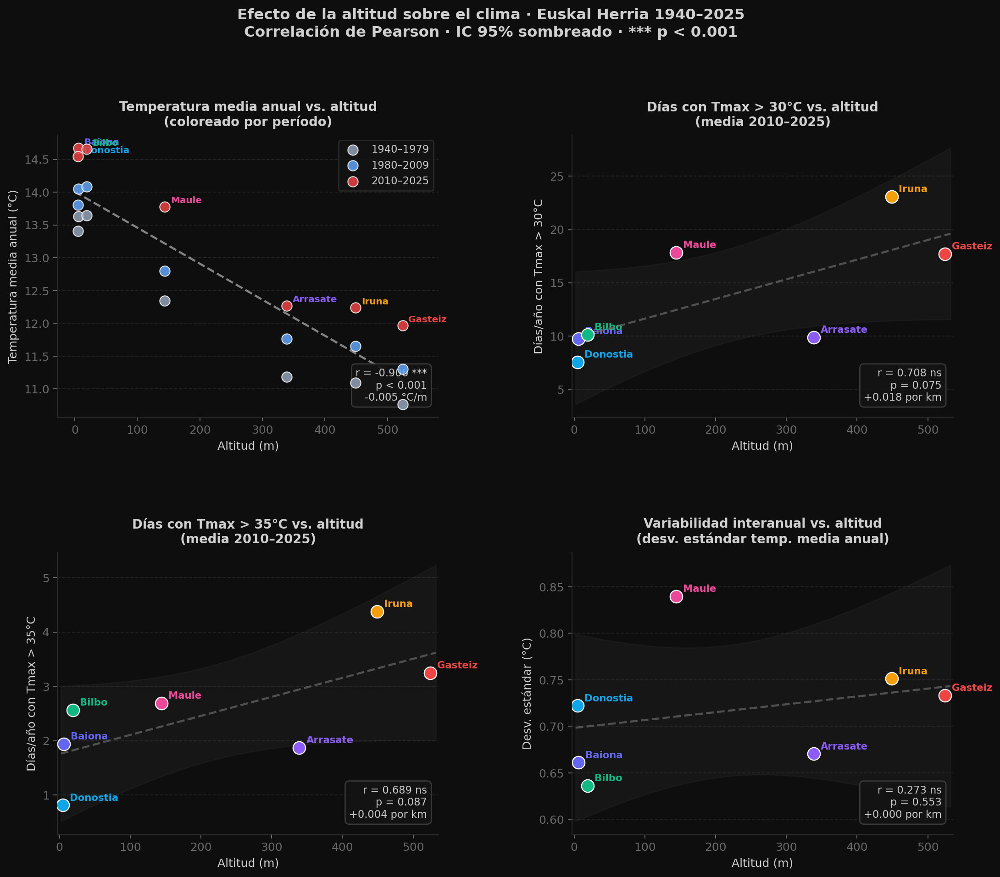
Síntesis de los principales hallazgos del análisis exploratorio.
- H1 Calentamiento confirmado y acelerado en las 7 ciudades: +0.2–0.3 °C/década. Los años más cálidos del registro se concentran en 2000–2025.
- H2 Reducción de precipitaciones con señal débil, pero rachas secas más largas en el interior. Los episodios intensos no muestran reducción clara.
- H3 Dos perfiles climáticos bien diferenciados: costa atlántica (suave, húmeda) vs. interior continental (extremos, más seca). La distancia al mar y la altitud son los factores clave.
- H4 Los extremos térmicos se multiplican desde 2000: olas de calor más frecuentes, largas e intensas, especialmente en ciudades de interior y mayor altitud.
- H5 El verano meteorológico se alarga, sobre todo en la costa (+7–9 días desde 1940), y la amplitud térmica aumenta en el interior, con efectos sobre ecosistemas y recursos hídricos.
- H6 El régimen de vientos muestra un ciclo estacional distinto en costa (máximo en invierno) e interior (máximo en primavera). El viento aumenta ligeramente en el interior (+0.1–0.3 km/h por década) y no cambia en la costa.
- Geo La distancia al mar y la altitud actúan conjuntamente como reguladores climáticos: a mayor distancia y mayor elevación, mayor exposición al cambio climático.